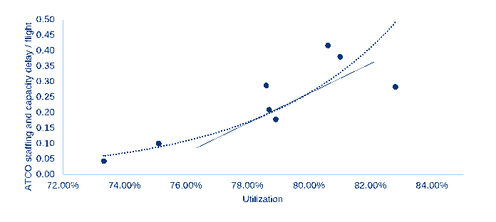
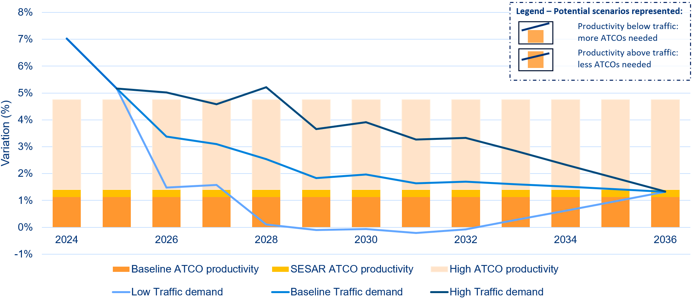

How workforce demand is formed
In the forward-looking model, traffic demand is converted into required controller hours and then into staffing. Productivity, utilisation and staff hours determine how much workforce is needed.
From traffic to workforce demand
The demand component of the model represents the number of ATCOs required to accommodate a given level of traffic demand. As ATCO demand is not directly observed, it is derived through a two-step process that converts projected traffic demand into the corresponding workforce requirement at ACC level.

Projected IFR flight hours are converted into the controller effort needed to accommodate them. ATCO productivity expresses how much traffic can be managed per hour of operational duty.
Productivity therefore acts as the link between traffic growth and workforce demand and reflects the combined influence of factors such as airspace design, operational procedures, supporting systems and automation. Higher levels of productivity allow a given traffic demand to be handled with fewer controller hours, whereas lower productivity increases the workforce required to manage the same traffic demand.
The second stage converts the resulting controller workload into staffing requirements. This conversion depends on two factors: first, the maximum number of operational hours that a controller can provide within a year, as determined by applicable legislation, collective agreements and local working arrangements; and the proportion of those hours that can effectively be dedicated to operational activities, represented within the model by the utilisation rate. Together, maximum staff hours and utilisation define the annual operational capacity that can be provided by an individual controller and, consequently, the number of controllers required to accommodate the projected workload.
Assumptions
The calculation of ATCO demand is based on a number of assumptions regarding the evolution of traffic demand, operational performance and controller availability over the projection period. The principal assumptions applied in the model are described below.
- Level of construction: The model is constructed at ACC level and subsequently aggregated to ANSP and European level. This approach preserves local traffic, operational and workforce characteristics while enabling a network-wide assessment of ATCO requirements.
- ATCO productivity: Four productivity scenarios are considered:
- No Productivity Gains scenario assumes that productivity remains at its 2023 level throughout the projection period;
- Baseline Productivity scenario assumes that productivity continues to improve at the median annual rate observed between 2012 and 2019;
- SESAR Productivity scenario assumes the productivity gains associated with a 43% increase in productivity by 2040 compared to 2023 levels; and
- High Productivity scenario assumes that ATCO productivity doubles by 2040 relative to the 2023 baseline.
- Traffic demand: Two traffic scenarios are considered:
- Baseline Traffic Demand follows the central traffic growth assumptions used in the ACE Benchmarking; and
- High Traffic Demand is derived from EUROCONTROL STATFOR high-growth forecasts up to 2032 and EUROCONTROL Aviation Outlook 2050 high-growth assumptions thereafter.
- Utilisation: Workforce requirements are estimated using a reference utilisation level intended to represent sustainable operating conditions. The selected utilisation value is derived from historical utilisation indicators and operational performance data, taking into account the relationship between utilisation and ATFM delay attributable to ATC staffing and capacity constraints.

- ATCO availability: The model assumes that the regulatory and contractual frameworks governing the deployment of operational ATCOs remain broadly unchanged throughout the projection period, unless changes have already been formally adopted at the time of the analysis. Consequently, changes in workforce requirements are driven by traffic and operational assumptions rather than by speculative future changes to working time or employment arrangements.
Traffic and productivity assumptions
ATCO demand is determined by the interaction between two factors: the volume of traffic that must be accommodated and the productivity achieved by the operational workforce. Whilst traffic demand generates the workload to be managed, productivity determines the amount of traffic that each ATCO can accommodate. The future evolution of workforce requirements therefore depends on the relationship between these two variables rather than on either of them in isolation.

Two forces that together determine future controller demand: how much traffic must be handled, and how productively that traffic is managed. The logic is straightforward. Traffic creates the workload, and productivity determines how many controllers are needed to absorb it. What matters, therefore, is not either variable on its own, but which of the two grows faster.
The comparison can be read directly from the figure. When the traffic line sits above the productivity columns, traffic is growing faster than productivity, and more controllers are needed. When productivity rises above traffic, each controller can handle more traffic, and fewer controllers are needed. Demand goes up or down depending on which side wins.
The forecasts show that traffic growth is strongest in the first years of the projection, as the network completes its post-pandemic recovery. Annual growth reaches around 5-7% in the mid-2020s before gradually slowing towards approximately 1-1.5% per year by the end of the horizon. The different traffic forecasts vary in size, but all follow the same shape: strong growth early on, followed by a steady slowdown.
Productivity, by contrast, is assumed to follow four alternative scenarios, reflecting different rates of efficiency gains from technology, new ATM concepts and wider system improvements. In the higher scenarios, particularly those linked to SESAR deployment, productivity keeps improving throughout the period, steadily increasing the amount of traffic each controller can manage. These scenarios should be interpreted as analytical assumptions rather than forecasts, as the realisation of sustained productivity improvements depends on the successful delivery of operational, organisational and technological changes over an extended period.
Putting the two together reveals a clear pattern. In the early years, traffic grows faster than productivity, so more controllers are needed. Later, traffic slows down while productivity improvements continue, reducing the rate at which workforce demand increases. Under the more optimistic productivity assumptions, workforce demand may eventually stabilise despite continued growth in traffic demand. However, achieving such outcomes depends on sustaining productivity improvements over a prolonged period and should therefore be interpreted with appropriate caution.
The key point is that demand is not driven by traffic alone, productivity matters just as much, and its weight grows over time. This is what creates the range of demand trajectories shown in the overall assessment.